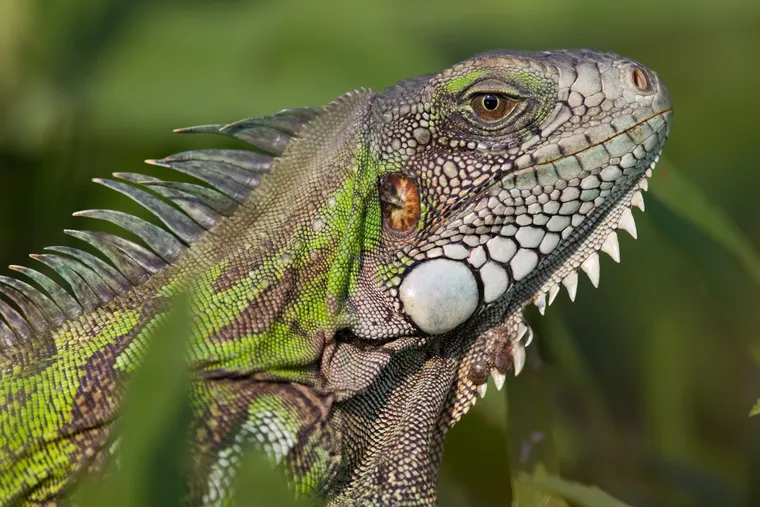

La iguana verde tiene 1,50 m de longitud. En el cuello y dorso tiene una alta cresta, formada por espinas independientes; otra serie de espinas similar aparece bajo el mentón. Posee cuerpo y cola alargados y estrechos; con esta última puede dar poderosos golpes, aunque es un animal inofensivo. Las iguanas son animales omnívoros ovíparos. Ponen sus huevos bajo tierra durante el mes de febrero. Llegan a la madurez sexual a los 16 meses de edad, pero son consideradas adultas a los 36 meses, cuando miden 70 cm de largo

Tercer ojo
Pacificas
Cambian de color